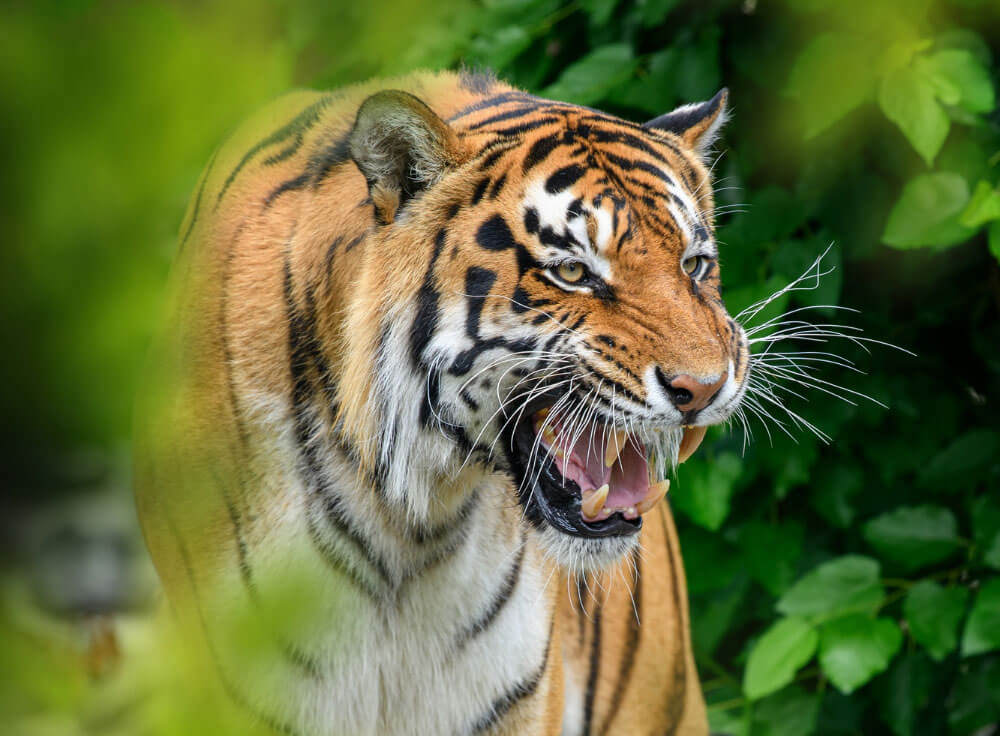

El Tigre es un gran felino que vive principalmente en bosques, selvas, manglares y praderas de Asia. Es un animal carnívoro y cazador, que se alimenta de animales como ciervos, jabalíes y otros mamíferos. Los tigres suelen ser solitarios y cada uno tiene su propio territorio donde busca alimento y se desplaza. Son excelentes cazadores, ya que utilizan su fuerza, sigilo y camuflaje para acercarse a sus presas sin ser vistos. Su característico pelaje naranja con rayas negras les ayuda a mezclarse con la vegetación y la sombra del bosque. Además, los tigres son animales muy fuertes y ágiles, capaces de correr, saltar y nadar muy bien.
Algunas características de los elefantes son:
- Son los felinos más grandes del mundo.
- Tienen pelaje naranja con rayas negras únicas en cada individuo.
- Son carnívoros y excelentes cazadores.
- Suelen ser animales solitarios.
- Son muy fuertes y buenos nadadores.